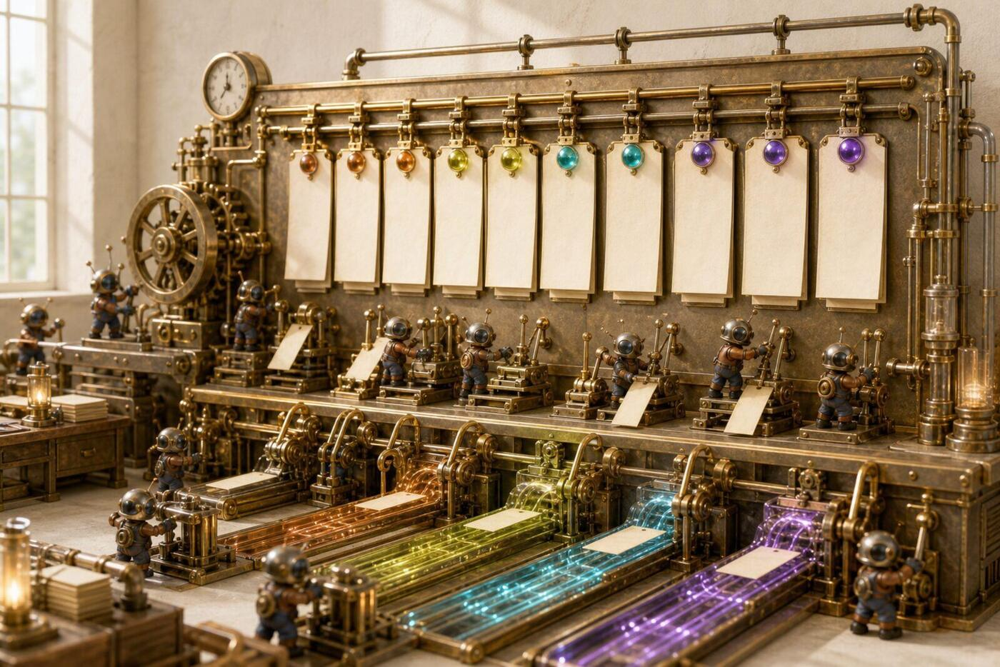
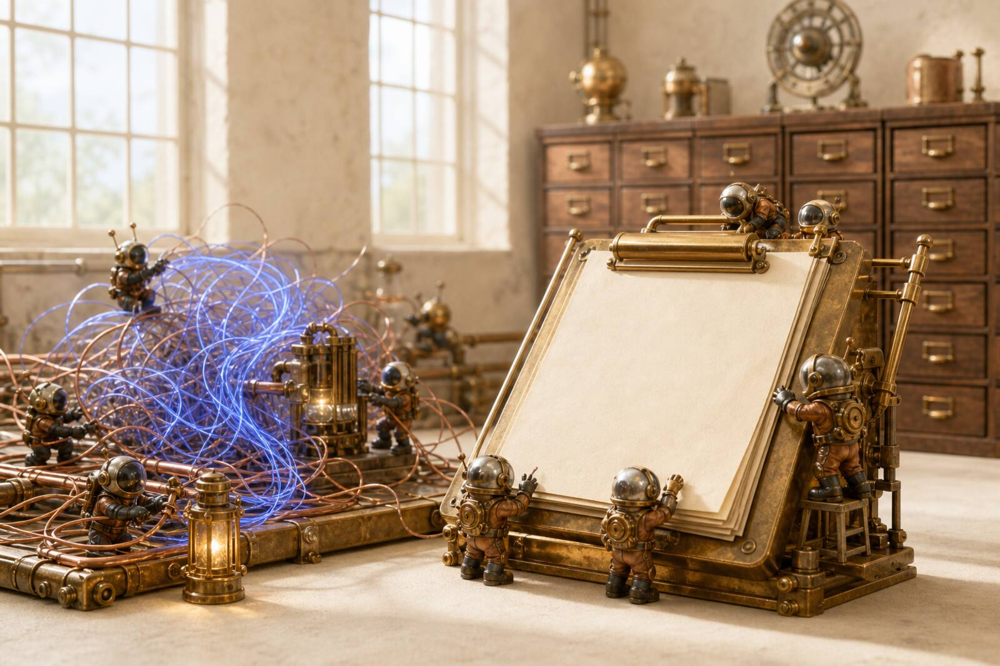
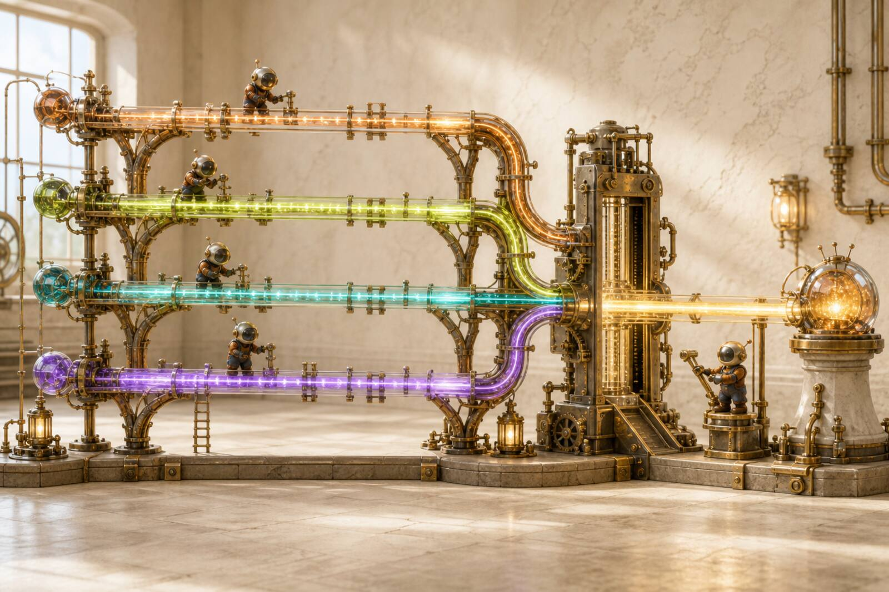
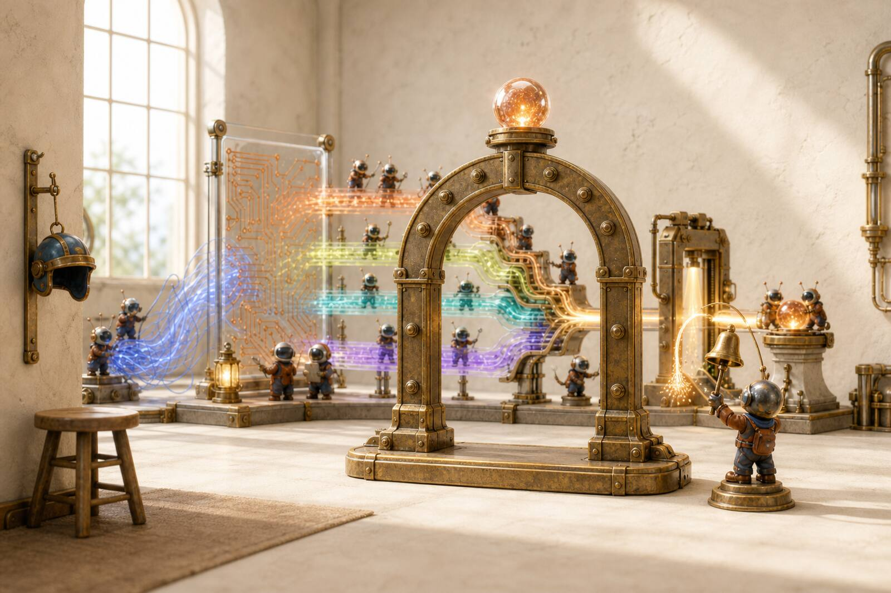
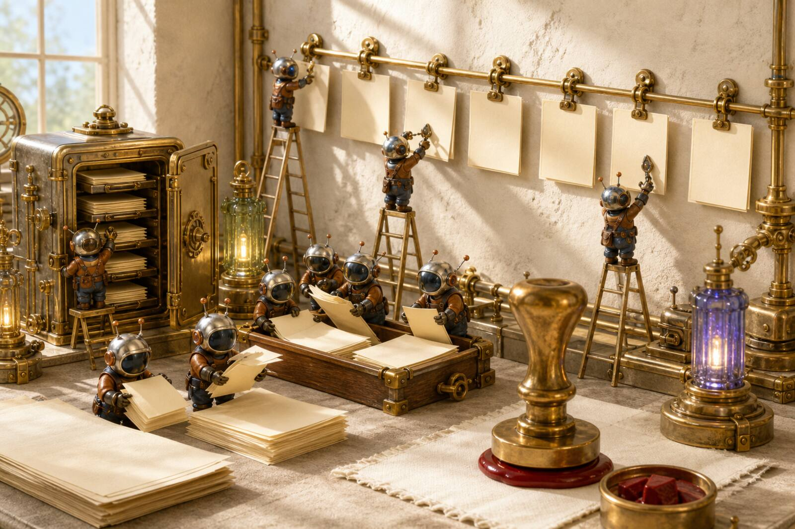
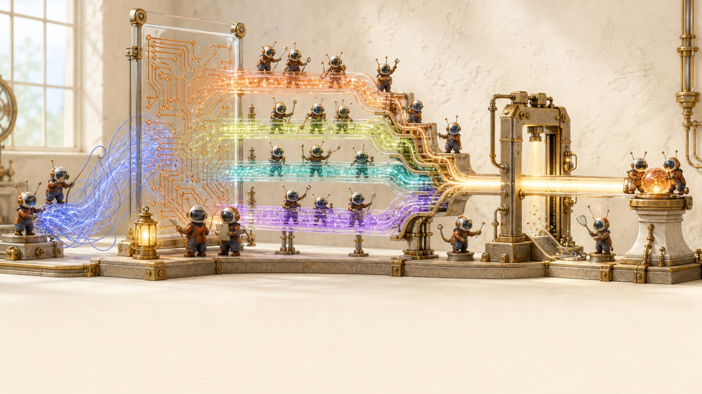

Click a lane. The mill pins that station.
Four laws, then a play. The stills are the same mill as the problems: plan, isolate, park at the gate, learn only what you accept.
The machine, not the pitch. A messy goal becomes a reviewed pull request. You only show up when it actually needs you.

Four laws, then a play. The stills are the same mill as the problems: plan, isolate, park at the gate, learn only what you accept.





Recommended first play
Use /autonomous when you have one requirement and you want Launch Pad + Supervisor chained, with stacked PRs if it takes more than one pass.
/autonomous "players can retry a daily challenge without losing the streak"
Highly recommended once the first PR lands. These are the plays that make Loomwright more than a task runner.
Overnight a queue
Turn a prompt, a folder of stories, or a backlog doc into a queue. Each item runs autonomous → review drain. Auto-merge stays off unless you pass a trusted gate.
Attack the merge
Adversarial pass on auth, payments, migrations, hooks, and agent prompts. Advisory. It finds the failure class before production does.
Test like a team
Risk map first, then Playwright generation with a debate loop. Use this on anything a user can click — not on a one-line typo fix.
Write the problem
Messy idea in, stories with acceptance criteria out. Add --brainstorm when the team is arguing and you need five expert lenses to fight it out.
Compound the craft
Distill session logs into lessons you accept one by one. Encode house rules so workers read them while doing the work, not only on review.
Inherit the mill
Two-minute catch-up for a teammate. A local scoreboard of heal rate, Twin growth, and whether last week actually got better.
See the blast radius
Per-subsystem contracts, hash-chained provenance, blast-radius at plan time. Advisory today. The north star is a mill that already knows this repo.
Keep the graph
One-way projection of runs, Twin contracts, and lessons into a vault you own. Nothing leaves the machine. The vault never becomes the engine.